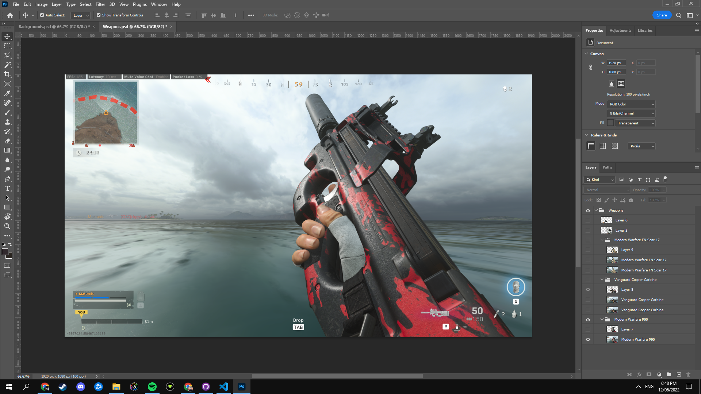
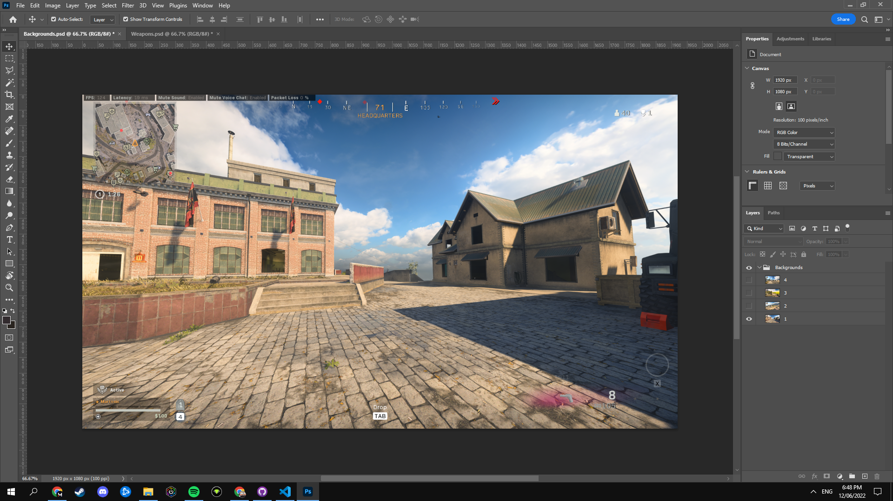
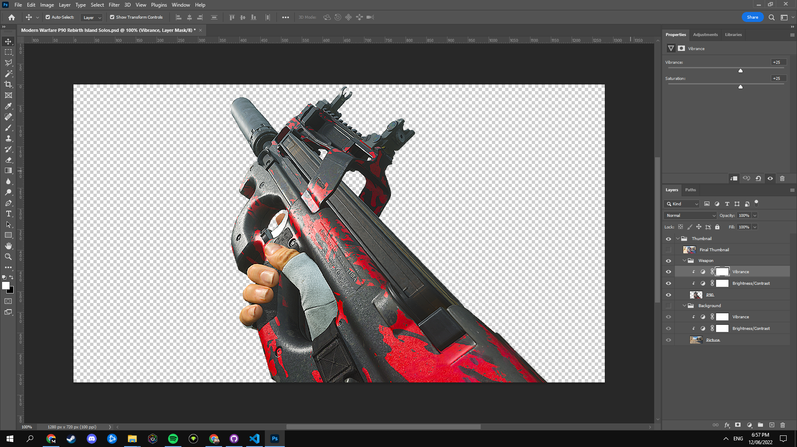
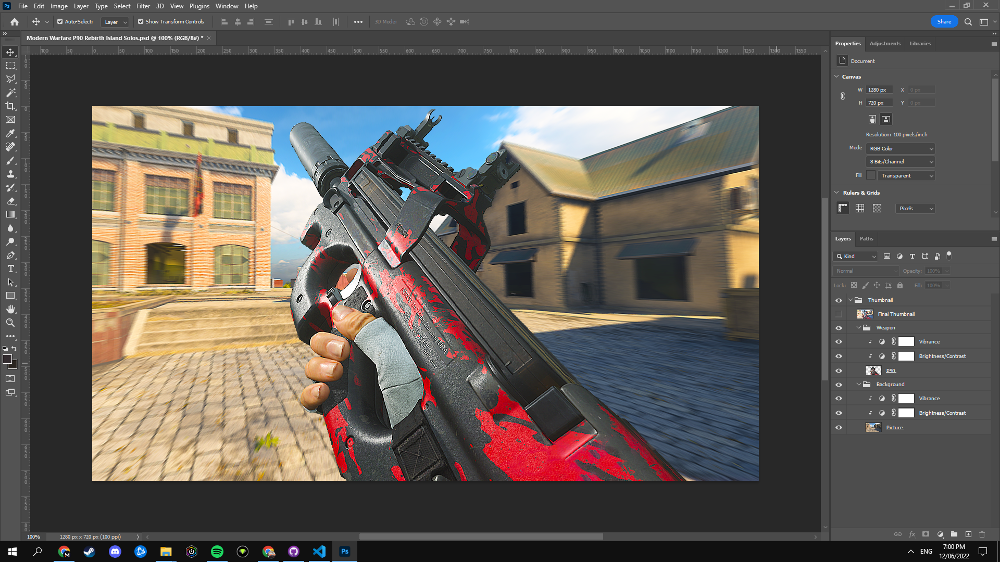
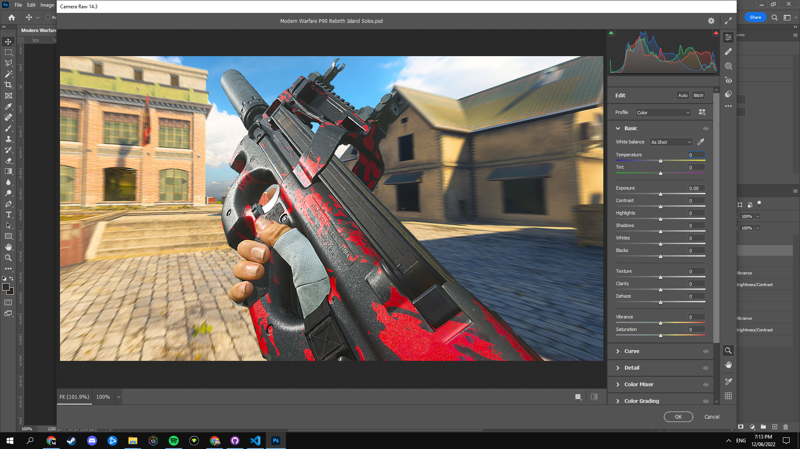
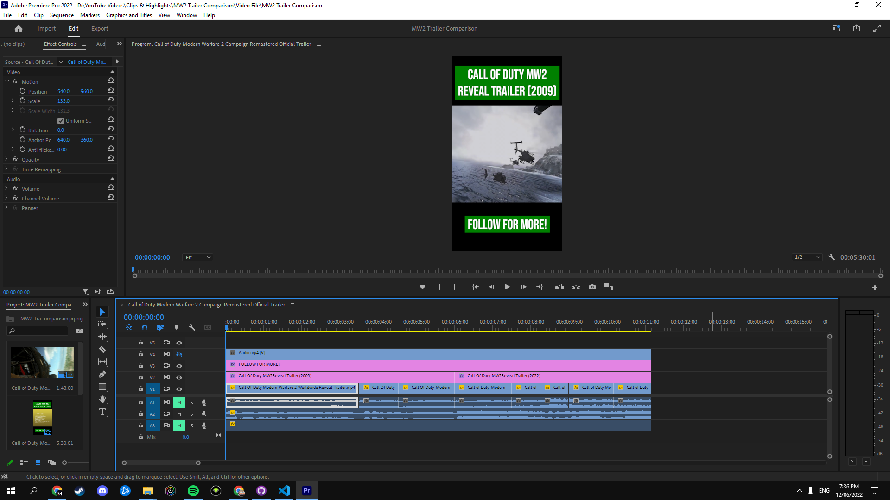

PROGRAMS
PROGRAMS
Adobe Creative Suite
 Adobe Photoshop
Adobe Photoshop
Adobe Photoshop is an image creation, graphic design and photo editing software developed by Adobe. Some features include pixel based images, raster graphics & vector graphics. It was originally released in 1990.
This is an example of how I use Adobe Photoshop in my workflow. I create Call Of Duty Warzone thumbnails for YouTube and I use a variety of different tools & effects to create it. Consider watching the timelapse below and potentially adjusting the playback speed to 0.25x for an improved viewing experience.
The start of a YouTube thumbnail involves gathering two images. These are of the weapon & background. I capture these ingame and click WINDOWS + PRINT SCREEN on my keyboard to take a screenshot. The size of these images are 1920x1080p but the finished thumbnail should to be 1280x720p. Here's an example of each once imported into Photoshop.
 After I have both images, the next step is cutting out the weapon. I use the Pen Tool and slowly trace the whole weapon which generally takes between 10-30 minutes. After this, I click on "Paths" and click on "Work Path" which highlights the Pen Tool selection and then I can use the Eraser Tool to remove my selection. This is what it looks like with a transparent background.
There are often several issues such as areas of the weapon which still need to be cut out (missed in initial cut out) and icons showing up which have to be removed. The icons are removed by using a combination of the Spot Healing Brush Tool, Clone Stamp Tool and several other tools. This is an example of what the weapon looks like once all editing has been finished.
After this I add some color correction layers onto the weapon to spice it up. These are Vibrance & Brightness/Contrast. See below.
The next steps are introducing the background layer which I reposition into an ideal location. The goal is to showcase the weapon in the foreground and the other stuff in the background. I then add some color correction layers onto the background layer as well as some effects. These effects include Sharpening & Radial Blur. This is what it looks like once the effects have been applied.
After the effects have been applied, I click CTRL + SHIFT + ALT + E to combine all my layers into one and then I click CTRL + SHIFT + A to open Camera Raw. The best way to explain this tool is importing and enhancing raw images which is a must-have tool for professional photographers, etc. It's very similar to Adobe Lightroom but it's a tool in Adobe Photoshop. This is what it looks like once the Camera Raw menu has been opened, there's a lot of stuff which you can change but I've found a way which I like doing it.
Here is what it looks like once the settings have been applied.
And we are finished! This is how I make my YouTube Thumbnails with several examples shown below.


 Adobe Premiere Pro
Adobe Premiere Pro
Adobe Premiere Pro is a timeline based video editing software developed by Adobe. Some features include automatic captions, colour matching and access to Adobe Stock assets. It was originally released in 2003.
My workflow invovlves extensive usage of Adobe Premiere Pro as I produce videos as a hobby. Here's a project which I recently worked on. It's a YouTube Shorts video with a 1080x1920p resolution. This is the opposite of 1920x1080p which is the standard for 16:9 content but this is vertical content so it's got a 9:16 aspect ratio.
This is the video file in Premiere Pro. It's an 11:10 second video with several video and audio tracks. I will explain all of the video & audio tracks right here. Let's start at the top. Video 4 has it's output hidden. Video 3 is the text "Follow For More!" at the bottom of the video. Video 2 is the text at the top of the video. This changes between two different versions. The first version is the 2009 version of the game and the second is the 2022 version of the game. Video 1 is the footage in the center of the video. Audio 1 is muted. Audio 2 is the music used in the video, this song is very popular on social media such as TikTok. Audio 3 is muted.
Color Correction is often something which I include in my videos but for this vertical video I did not include it. This is what the Color Workspace looks like in Premiere Pro.
This is what it looks like once I've applied some color correction onto the video. I slightly increase the sharpness & vibrance of the video and then greatly increase the saturation. This is often done for videos of Call Of Duty Warzone and other games.
Some of the other things which I edit is the volume of certain tracks such as my Microphone and Game Sound. This is accomplished in the Audio Workspace in Premiere Pro.
After the video is edited, you need to export it so here is the Export panel on Premiere Pro. I've created two of my own presets for Normal Videos (16:9 1920x1080p) and Vertical Videos (9:16 1080x1920p). All of my videos are exported at 60fps.
If you would like to view any of my videos edited in Premiere Pro, consider checking out my YouTube channel! You will also be able to see some examples of how I've used Photoshop for the video thumbnails.
 Adobe After Effects
Adobe After Effects
Adobe After Effects is a digital visual effects, motion graphics and compositing application developed by Adobe. Some features include media replacement, fast exports and a powerful 3d design space. It was originally released in 1993.
I have used After Effects to create an Endscreen for YouTube. Endscreens are used to promote other videos to viewers, encourage them to subscribe, etc. This is what it looks like!
It's made up of three sources and these are Banner (Text), Particles & Banner (Color). The first source, Banner (Text) is the text at the top of the endscreen. The second source, Particles is the white particles which are animated. The third source, Banner (Color) is the background color for the endscreen.
The particles have been created using the Particle World effect in After Effects. There's a ton of variables which you can change on the panel in the top left and these edit what the particles looks like.
Google Workspace
 Google Docs
Google Docs
Google Docs is an online word processor which is included in the Google Workspace. Some features include seamless collaboration, automatic saving and connections with other Google apps. It was originally released in 2006.
I'm using this program to create documentation for the Porfolio Website assignment. This document contains a variety of formatting decisions such as proper usage of text styles such as Title, Heading One, Normal Text, etc. This helps with navigation. Another one is the usage of a footer to provide information regarding the GitHub Repository, Portfolio Website and which page they are currently viewing. The best way to see all changes is just by viewing the document. See below.
You can view the documentation by clicking Here.
 Google Sheets
Google Sheets
Google Sheets is a spreadsheet program which is included in the Google Workspace. Some features include smart fill, formula suggestions and access to edit Microsoft Excel spreadsheets online. It was originally released in 2006.
This Spreadsheet is created by me and is designed to show useful information for players of Call Of Duty Warzone. There are two Sheets, one is Loadouts and the other is Data. The Data sheet contains all of the information which is then displayed on the Loadouts sheet with better formatting. See below for examples.
Did you know that the rows 1-4 are sticky? So once more entries are added, you can see still what each column means!

I'm using an in-cell dropdown list to pick which game the weapon is from and to pick which type of weapon it is.

Here's a better look at how the in-cell dropdown lists are created. It's added through Data Validation and you select List Of Items and then add a comma between each item. This specifically shows the List Of Items for the weapon type column.
It's time to move onto the formulas used in the Spreadsheet. This first one shows how the Weapon Type is pulled from Data and is showcased on the Loadouts Sheet.

The Attachments column is the most complicated and took a bit of time to figure out. It uses something called TextJoin which combines text from multiple strings and/or arrays with a specific delimiter seperating the different texts. This pulls Attachments from Data and showcases it in a neatly organized manner. Cool right?

What's wonderful about this Spreadsheet is you can add more entries into Data and it automatically gets added into Loadouts. Additionally, this Spreadsheet will most likely update as I am constantly adding new entries into it. Click Here to view the Spreadsheet.
 Google Drive
Google Drive
Google Drive is a file storage and synchronization service which is included in the Google Workspace. Some features include storing, sharing and collaborating on files & folders from any mobile device, tablet or computer. It was originally released in 2012.
Most of the Google Workspace is based off Google Drive, this means that you can go onto your Drive and create new Docs, Slides, Sheets, etc files and put it into folders (organize). Here's a picture of my Warzone Loadouts folder which contains a Google Sheets file. Knowing how to use Google Drive is an essential skill as it's the base to learn other things such as Google Docs, Google Slides, etc.
The best part about the Google Workspace in general is how you can collaborate with other people on pretty much every single piece of software that they have in the suite. You could be editing a Google Docs file and your friend could also be editing the same file!
Organizational Tools
 Trello
Trello
Trello is a web-based list-making application developed by Trello Enterprise, a subsidiary of Atlassian. It allows individuals or teams to stay on track and focus on work. It was originally released in 2011.
This program is one of my favorites as it allows you to stay organized. I use it for several personal projects (I won't be sharing images of these) but I have set up an Example Trello Board. There are 3 Categories and these are To Do List, Work In Progress and Completed. Inside of a Category you can add Cards and these hold information!

Here's a look at a Card. You can change the Title, add Labels, add Attachments, etc. There's so much you can do!

This is what the Labels menu looks like. You can assign Labels to a card by clicking on the Label which you want or you could create a new Label.

You can even assign Dates to certain Cards to say when they need to be completed! This is very useful.

If you would like to view the Trello Board, click Here. I encourage everybody to keep on track and stay organized with Trello.
All images of guns and other potentially offensive images are not real and are from a video game. Additionally, all examples are my own creations and have been made in the program that they are listed under. The logos for each application are not my own and have been created by either Adobe, Google or Atlassian.

MARTIN ZUREK
PORTFOLIO WEBSITE
PROGRAMS PAGE